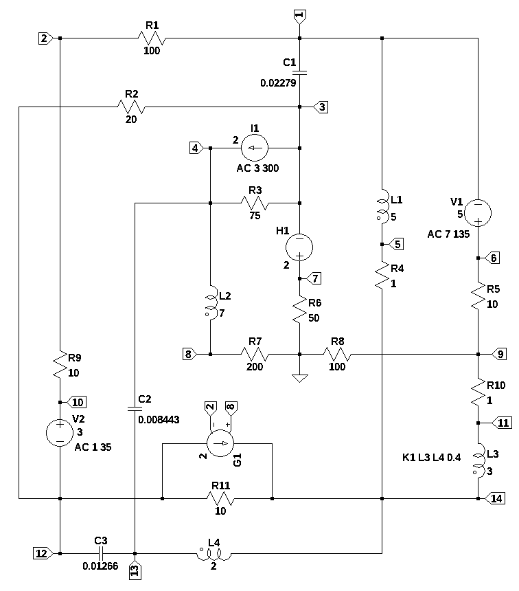

import os
from sympy import *
import numpy as np
from tabulate import tabulate
from scipy import signal
import matplotlib.pyplot as plt
import pandas as pd
import SymMNA
init_printing()24 A polyphase circuit
mayeb a new title: superposition and polyphase
combining two topics
Abstract
A circuit to illustrate superposition and polyphase circuit analysis.
24.1 Introduction
what is superposition what is a polyphase circuit.
as discussed below too large for useful symbolic analysis.

What is a phasor?
In physics and engineering, a phasor (a portmanteau of phase vector[1][2]) is a complex number representing a sinusoidal function whose amplitude (A), and initial phase (θ) are time-invariant and whose angular frequency (ω) is fixed. It is related to a more general concept called analytic representation,[3] which decomposes a sinusoid into the product of a complex constant and a factor depending on time and frequency. The complex constant, which depends on amplitude and phase, is known as a phasor, or complex amplitude,[4][5] and (in older texts) sinor[6] or even complexor.[6
A common application is in the steady-state analysis of an electrical network powered by time varying current where all signals are assumed to be sinusoidal with a common frequency. Phasor representation allows the analyst to represent the amplitude and phase of the signal using a single complex number. The only difference in their analytic representations is the complex amplitude (phasor). A linear combination of such functions can be represented as a linear combination of phasors (known as phasor arithmetic or phasor algebra[7]: 53 ) and the time/frequency dependent factor that they all have in common.
24.2 Circuit description
The most commen every day poly phase circuits are three phase power circuits for the electric utility. In this example there thre three phases and three frequencies. To illustrate supper posistion .
- a collection of AC and DC sources
- coupled inductors
- dependent sources
- RLC
- non planer
too large to do by hand, can’t simplify, not planar, so loop analysis is difficult. But also too large for symbolic solution.
| source | DC | Magnitude @ angle | frequency, Hz |
|---|---|---|---|
| V1 | 5 | 7 @ 135 | 3 |
| V2 | 1 | 1 @ 35 | 5 |
| I1 | 2 | 3 @ 300 | 7 |
| source | DC | AC, mag @ phase | omega |
|---|---|---|---|
| V1 | 5 | 7 @ 135 | \(2 \pi 3\) |
| V2 | 1 | 1 @ 35 | \(2 \pi 5\) |
| I1 | 2 | 3 @ 300 | \(2 \pi 7\) |
Independent sources get set to zero one at a time for each frequency.
V is zero because is an AC short and I is zero because no current flows and is open.
What is the Superposition Theorem?
The strategy used in the superposition theorem is to eliminate all but one source of power within a network at a time. Then, we use series and parallel circuit analysis techniques to determine voltage drops and currents within the modified network for each power source separately.
This process is then repeated sequentially by individually evaluating the circuit for every voltage and current source in the system. After each individual analysis has been completed, the voltage and current values are all “superimposed” on top of each other (added algebraically) to find the actual voltage drops and currents with all sources active.
What does it mean to turn off a current source? It means we set
. That’s the same as replacing the current source with an open circuit.
What does it mean to turn off a voltage source? It means we set
. This is the same thing as replacing the voltage source or battery by a short circuit.
The theorem does not apply to non-linear circuits. The requisite of linearity indicates that the superposition theorem is only applicable to determine voltage and current but not power. Power dissipation is a nonlinear function that does not algebraically add to an accurate total when only one source is considered at a time.
Superposition works for voltage and current but not power. In other words, the sum of the powers of each source with the other sources turned off is not the real consumed power. To calculate power we first use superposition to find both current and voltage of each linear element and then calculate the sum of the multiplied voltages and currents.
24.3 Circuit description
V1 6 1 5 AC 7 90
V2 10 12 1 AC 1 35
I3 3 4 2 AC 3 210
L3 11 14 3 Rser=0
L1 1 5 5 Rser=0
L4 14 13 2 Rser=0
L2 4 8 7 Rser=0
H1 7 3 V2 2
G1 12 14 8 2 2
C1 3 1 0.02279
C2 4 13 0.008443
C3 13 12 0.01266
R9 2 10 10
R6 7 0 50
R4 5 14 1
R1 1 2 100
R3 3 4 75
R7 0 8 200
R11 14 12 10
R5 6 9 10
R10 9 11 1
R8 9 0 100
R2 3 12 20
K1 L3 L4 0.4In electrical engineering, a time invarient sinusudial signal can be represented either by polar or rectangular notation. The function polar converts the polar representation, also called a phasor to rectangular notation.
def polar(mag, ang, units='deg'):
''' polar to rectangular conversion
mag: float
magnitude of the time invarient sinusudial signal
ang: float
the angle of the time invarient sinusudial signal
units: string
if units is set to deg, and is in degrees not radians
'''
if units == 'deg':
ang = ang * np.pi / 180
return mag * np.exp(1j * ang)24.4 Symbolic MNA code
24.5 Load the net list
independent sources have their values set to the DC value.
example_net_list = '''
V1 6 1 5
V2 10 12 1
I3 3 4 2
L3 11 14 3
L1 1 5 5
L4 14 13 2
L2 4 8 7
H1 7 3 V2 2
G1 12 14 8 2 2
C1 3 1 0.02279
C2 4 13 0.008443
C3 13 12 0.01266
R9 2 10 10
R6 7 0 50
R4 5 14 1
R1 1 2 100
R3 3 4 75
R7 0 8 200
R11 14 12 10
R5 6 9 10
R10 9 11 1
R8 9 0 100
R2 3 12 20
K1 L3 L4 0.4
'''report, df, df2, A, X, Z = SymMNA.smna(example_net_list)print(report)Net list report
number of lines in netlist: 24
number of branches: 23
number of nodes: 14
number of unknown currents: 7
number of RLC (passive components): 18
number of inductors: 4
number of independent voltage sources: 2
number of independent current sources: 1
number of op amps: 0
number of E - VCVS: 0
number of G - VCCS: 1
number of F - CCCS: 0
number of H - CCVS: 1
number of K - Coupled inductors: 1
# Put matricies into SymPy
X = Matrix(X)
Z = Matrix(Z)equ = Eq(A*X,Z)equ\(\displaystyle \left[\begin{matrix}- C_{1} s v_{3} + I_{L1} - I_{V1} + v_{1} \left(C_{1} s + \frac{1}{R_{1}}\right) - \frac{v_{2}}{R_{1}}\\v_{2} \cdot \left(\frac{1}{R_{9}} + \frac{1}{R_{1}}\right) - \frac{v_{10}}{R_{9}} - \frac{v_{1}}{R_{1}}\\- C_{1} s v_{1} - I_{H1} + v_{3} \left(C_{1} s + \frac{1}{R_{3}} + \frac{1}{R_{2}}\right) - \frac{v_{4}}{R_{3}} - \frac{v_{12}}{R_{2}}\\- C_{2} s v_{13} + I_{L2} + v_{4} \left(C_{2} s + \frac{1}{R_{3}}\right) - \frac{v_{3}}{R_{3}}\\- I_{L1} - \frac{v_{14}}{R_{4}} + \frac{v_{5}}{R_{4}}\\I_{V1} + \frac{v_{6}}{R_{5}} - \frac{v_{9}}{R_{5}}\\I_{H1} + \frac{v_{7}}{R_{6}}\\- I_{L2} + \frac{v_{8}}{R_{7}}\\v_{9} \cdot \left(\frac{1}{R_{8}} + \frac{1}{R_{5}} + \frac{1}{R_{10}}\right) - \frac{v_{6}}{R_{5}} - \frac{v_{11}}{R_{10}}\\I_{V2} + \frac{v_{10}}{R_{9}} - \frac{v_{2}}{R_{9}}\\I_{L3} + \frac{v_{11}}{R_{10}} - \frac{v_{9}}{R_{10}}\\- C_{3} s v_{13} - I_{V2} - g_{1} v_{2} + g_{1} v_{8} + v_{12} \left(C_{3} s + \frac{1}{R_{2}} + \frac{1}{R_{11}}\right) - \frac{v_{3}}{R_{2}} - \frac{v_{14}}{R_{11}}\\- C_{2} s v_{4} - C_{3} s v_{12} - I_{L4} + v_{13} \left(C_{2} s + C_{3} s\right)\\- I_{L3} + I_{L4} + g_{1} v_{2} - g_{1} v_{8} + v_{14} \cdot \left(\frac{1}{R_{4}} + \frac{1}{R_{11}}\right) - \frac{v_{5}}{R_{4}} - \frac{v_{12}}{R_{11}}\\- v_{1} + v_{6}\\v_{10} - v_{12}\\- I_{L3} L_{3} s - I_{L4} M_{1} s + v_{11} - v_{14}\\- I_{L1} L_{1} s + v_{1} - v_{5}\\- I_{L3} M_{1} s - I_{L4} L_{4} s - v_{13} + v_{14}\\- I_{L2} L_{2} s + v_{4} - v_{8}\\- I_{V2} h_{1} - v_{3} + v_{7}\end{matrix}\right] = \left[\begin{matrix}0\\0\\- I_{3}\\I_{3}\\0\\0\\0\\0\\0\\0\\0\\0\\0\\0\\V_{1}\\V_{2}\\0\\0\\0\\0\\0\end{matrix}\right]\)
# turn the free symbols into SymPy variables
var(str(equ.free_symbols).replace('{','').replace('}',''))\(\displaystyle \left( I_{H1}, \ L_{1}, \ v_{9}, \ I_{L1}, \ R_{1}, \ v_{13}, \ s, \ v_{4}, \ v_{5}, \ v_{10}, \ R_{9}, \ h_{1}, \ C_{2}, \ V_{2}, \ R_{4}, \ v_{11}, \ C_{1}, \ V_{1}, \ I_{V2}, \ I_{L3}, \ C_{3}, \ R_{5}, \ R_{11}, \ v_{2}, \ v_{7}, \ R_{3}, \ I_{L2}, \ v_{14}, \ R_{2}, \ v_{12}, \ R_{7}, \ L_{4}, \ R_{8}, \ v_{1}, \ L_{2}, \ g_{1}, \ v_{3}, \ R_{10}, \ v_{8}, \ I_{L4}, \ L_{3}, \ v_{6}, \ I_{3}, \ M_{1}, \ I_{V1}, \ R_{6}\right)\)
24.6 Symbolic solution
symbolic_solution = solve(equ,X)
24.7 Built a dictionary of element values
element_value_keys = []
element_value_values = []
for i in range(len(df)):
if df.iloc[i]['element'][0] == 'F' or df.iloc[i]['element'][0] == 'E' or df.iloc[i]['element'][0] == 'G' or df.iloc[i]['element'][0] == 'H':
element_value_keys.append(var(df.iloc[i]['element'].lower()))
element_value_values.append(df.iloc[i]['value'])
#print('{:s}:{:f},'.format(df.iloc[i]['element'].lower(),df.iloc[i]['value']))
else:
element_value_keys.append(var(df.iloc[i]['element']))
element_value_values.append(df.iloc[i]['value'])
#print('{:s}:{:.4e},'.format(df.iloc[i]['element'],df.iloc[i]['value']))
element_values = dict(zip(element_value_keys, element_value_values))# calculate the coupling constant from the mutual inductance
element_values[M1] = element_values[K1]*np.sqrt(element_values[L3] *element_values[L4])
print('mutual inductance, M1 = {:.9f}'.format(element_values[M1]))mutual inductance, M1 = 0.979795897element_values\(\displaystyle \left\{ C_{1} : 0.02279, \ C_{2} : 0.008443, \ C_{3} : 0.01266, \ I_{3} : 2.0, \ K_{1} : 0.4, \ L_{1} : 5.0, \ L_{2} : 7.0, \ L_{3} : 3.0, \ L_{4} : 2.0, \ M_{1} : 0.979795897113271, \ R_{1} : 100.0, \ R_{10} : 1.0, \ R_{11} : 10.0, \ R_{2} : 20.0, \ R_{3} : 75.0, \ R_{4} : 1.0, \ R_{5} : 10.0, \ R_{6} : 50.0, \ R_{7} : 200.0, \ R_{8} : 100.0, \ R_{9} : 10.0, \ V_{1} : 5.0, \ V_{2} : 1.0, \ g_{1} : 2.0, \ h_{1} : 2.0\right\}\)
element_values[I3]\(\displaystyle 2.0\)
24.8 Operating point
equ_values = equ.subs(element_values)
equ_values\(\displaystyle \left[\begin{matrix}I_{L1} - I_{V1} - 0.02279 s v_{3} + v_{1} \cdot \left(0.02279 s + 0.01\right) - 0.01 v_{2}\\- 0.01 v_{1} - 0.1 v_{10} + 0.11 v_{2}\\- I_{H1} - 0.02279 s v_{1} - 0.05 v_{12} + v_{3} \cdot \left(0.02279 s + 0.0633333333333333\right) - 0.0133333333333333 v_{4}\\I_{L2} - 0.008443 s v_{13} - 0.0133333333333333 v_{3} + v_{4} \cdot \left(0.008443 s + 0.0133333333333333\right)\\- I_{L1} - 1.0 v_{14} + 1.0 v_{5}\\I_{V1} + 0.1 v_{6} - 0.1 v_{9}\\I_{H1} + 0.02 v_{7}\\- I_{L2} + 0.005 v_{8}\\- 1.0 v_{11} - 0.1 v_{6} + 1.11 v_{9}\\I_{V2} + 0.1 v_{10} - 0.1 v_{2}\\I_{L3} + 1.0 v_{11} - 1.0 v_{9}\\- I_{V2} - 0.01266 s v_{13} + v_{12} \cdot \left(0.01266 s + 0.15\right) - 0.1 v_{14} - 2.0 v_{2} - 0.05 v_{3} + 2.0 v_{8}\\- I_{L4} - 0.01266 s v_{12} + 0.021103 s v_{13} - 0.008443 s v_{4}\\- I_{L3} + I_{L4} - 0.1 v_{12} + 1.1 v_{14} + 2.0 v_{2} - 1.0 v_{5} - 2.0 v_{8}\\- v_{1} + v_{6}\\v_{10} - v_{12}\\- 3.0 I_{L3} s - 0.979795897113271 I_{L4} s + v_{11} - v_{14}\\- 5.0 I_{L1} s + v_{1} - v_{5}\\- 0.979795897113271 I_{L3} s - 2.0 I_{L4} s - v_{13} + v_{14}\\- 7.0 I_{L2} s + v_{4} - v_{8}\\- 2.0 I_{V2} - v_{3} + v_{7}\end{matrix}\right] = \left[\begin{matrix}0\\0\\-2.0\\2.0\\0\\0\\0\\0\\0\\0\\0\\0\\0\\0\\5.0\\1.0\\0\\0\\0\\0\\0\end{matrix}\right]\)
equ_values_dc = equ_values.subs({s:0})
equ_values_dc # display the equations\(\displaystyle \left[\begin{matrix}I_{L1} - I_{V1} + 0.01 v_{1} - 0.01 v_{2}\\- 0.01 v_{1} - 0.1 v_{10} + 0.11 v_{2}\\- I_{H1} - 0.05 v_{12} + 0.0633333333333333 v_{3} - 0.0133333333333333 v_{4}\\I_{L2} - 0.0133333333333333 v_{3} + 0.0133333333333333 v_{4}\\- I_{L1} - 1.0 v_{14} + 1.0 v_{5}\\I_{V1} + 0.1 v_{6} - 0.1 v_{9}\\I_{H1} + 0.02 v_{7}\\- I_{L2} + 0.005 v_{8}\\- 1.0 v_{11} - 0.1 v_{6} + 1.11 v_{9}\\I_{V2} + 0.1 v_{10} - 0.1 v_{2}\\I_{L3} + 1.0 v_{11} - 1.0 v_{9}\\- I_{V2} + 0.15 v_{12} - 0.1 v_{14} - 2.0 v_{2} - 0.05 v_{3} + 2.0 v_{8}\\- I_{L4}\\- I_{L3} + I_{L4} - 0.1 v_{12} + 1.1 v_{14} + 2.0 v_{2} - 1.0 v_{5} - 2.0 v_{8}\\- v_{1} + v_{6}\\v_{10} - v_{12}\\v_{11} - v_{14}\\v_{1} - v_{5}\\- v_{13} + v_{14}\\v_{4} - v_{8}\\- 2.0 I_{V2} - v_{3} + v_{7}\end{matrix}\right] = \left[\begin{matrix}0\\0\\-2.0\\2.0\\0\\0\\0\\0\\0\\0\\0\\0\\0\\0\\5.0\\1.0\\0\\0\\0\\0\\0\end{matrix}\right]\)
U_dc = solve(equ_values_dc,X)
U_dc\(\displaystyle \left\{ I_{H1} : -11.5738896073146, \ I_{L1} : 20.3047789474962, \ I_{L2} : 2.80469316139686, \ I_{L3} : 15.3718733304192, \ I_{L4} : 0.0, \ I_{V1} : -0.993290561707708, \ I_{V2} : -21.2980695092039, \ v_{1} : -1432.92537125407, \ v_{10} : 909.862274758366, \ v_{11} : -1453.23015020156, \ v_{12} : 908.862274758366, \ v_{13} : -1453.23015020156, \ v_{14} : -1453.23015020156, \ v_{2} : 696.881579666327, \ v_{3} : 621.290619384137, \ v_{4} : 560.938632279372, \ v_{5} : -1432.92537125407, \ v_{6} : -1427.92537125407, \ v_{7} : 578.694480365729, \ v_{8} : 560.938632279372, \ v_{9} : -1437.85827687114\right\}\)
table_header = ['unknown', 'mag','phase, deg']
table_row = []
for name, value in U_dc.items():
table_row.append([str(name),float(abs(value)),float(arg(value)*180/np.pi)])
print(tabulate(table_row, headers=table_header,colalign = ('left','decimal','decimal'),tablefmt="simple",floatfmt=('5s','.6f','.6f')))unknown mag phase, deg
--------- ----------- ------------
v1 1432.925371 180.000000
v2 696.881580 0.000000
v3 621.290619 0.000000
v4 560.938632 0.000000
v5 1432.925371 180.000000
v6 1427.925371 180.000000
v7 578.694480 0.000000
v8 560.938632 0.000000
v9 1437.858277 180.000000
v10 909.862275 0.000000
v11 1453.230150 180.000000
v12 908.862275 0.000000
v13 1453.230150 180.000000
v14 1453.230150 180.000000
I_V1 0.993291 180.000000
I_V2 21.298070 180.000000
I_L3 15.371873 0.000000
I_L1 20.304779 0.000000
I_L4 0.000000 nan
I_L2 2.804693 0.000000
I_H1 11.573890 180.000000LTSpice results:
--- Operating Point ---
V(6): -1427.93 voltage
V(1): -1432.93 voltage
V(10): 909.862 voltage
V(12): 908.862 voltage
V(3): 621.291 voltage
V(4): 560.939 voltage
V(11): -1453.23 voltage
V(14): -1453.23 voltage
V(5): -1432.93 voltage
V(13): -1453.23 voltage
V(8): 560.939 voltage
V(7): 578.694 voltage
V(2): 696.882 voltage
V(9): -1437.86 voltage
I(C1): 4.68156e-11 device_current
I(C2): 1.70056e-11 device_current
I(C3): -2.99041e-11 device_current
I(H1): -11.5739 device_current
I(L3): 15.3719 device_current
I(L1): 20.3048 device_current
I(L4): -4.69091e-11 device_current
I(L2): 2.80469 device_current
I(I3): 2 device_current
I(R9): -21.2981 device_current
I(R6): 11.5739 device_current
I(R4): 20.3048 device_current
I(R1): -21.2981 device_current
I(R3): 0.804693 device_current
I(R7): -2.80469 device_current
I(R11): -236.209 device_current
I(R5): 0.993291 device_current
I(R10): 15.3719 device_current
I(R8): -14.3786 device_current
I(R2): -14.3786 device_current
I(G1): -271.886 device_current
I(V1): -0.993291 device_current
I(V2): -21.2981 device_current24.9 Independednt sources with the same frequency
ev_w = element_values.copy() # ev for element valuesev_w[I3] = polar(3, 300, units='deg')
ev_w[V2] = polar(1, 35, units='deg')
ev_w[V1] = polar(7, 135, units='deg')ev_w{V1: (-4.949747468305832+4.949747468305833j),
V2: (0.8191520442889918+0.573576436351046j),
I3: (1.5000000000000004-2.598076211353316j),
L3: 3.0,
L1: 5.0,
L4: 2.0,
L2: 7.0,
h1: 2.0,
g1: 2.0,
C1: 0.02279,
C2: 0.008443,
C3: 0.01266,
R9: 10.0,
R6: 50.0,
R4: 1.0,
R1: 100.0,
R3: 75.0,
R7: 200.0,
R11: 10.0,
R5: 10.0,
R10: 1.0,
R8: 100.0,
R2: 20.0,
K1: 0.4,
M1: 0.9797958971132712}equ_ev_w = equ.subs(ev_w)equ_ev_w = equ_ev_w.subs({s:2*np.pi*3j})equ_ev_w\(\displaystyle \left[\begin{matrix}I_{L1} - I_{V1} + v_{1} \cdot \left(0.01 + 0.429581379451868 i\right) - 0.01 v_{2} - 0.429581379451868 i v_{3}\\- 0.01 v_{1} - 0.1 v_{10} + 0.11 v_{2}\\- I_{H1} - 0.429581379451868 i v_{1} - 0.05 v_{12} + v_{3} \cdot \left(0.0633333333333333 + 0.429581379451868 i\right) - 0.0133333333333333 v_{4}\\I_{L2} - 0.159146800645552 i v_{13} - 0.0133333333333333 v_{3} + v_{4} \cdot \left(0.0133333333333333 + 0.159146800645552 i\right)\\- I_{L1} - 1.0 v_{14} + 1.0 v_{5}\\I_{V1} + 0.1 v_{6} - 0.1 v_{9}\\I_{H1} + 0.02 v_{7}\\- I_{L2} + 0.005 v_{8}\\- 1.0 v_{11} - 0.1 v_{6} + 1.11 v_{9}\\I_{V2} + 0.1 v_{10} - 0.1 v_{2}\\I_{L3} + 1.0 v_{11} - 1.0 v_{9}\\- I_{V2} + v_{12} \cdot \left(0.15 + 0.238635377966681 i\right) - 0.238635377966681 i v_{13} - 0.1 v_{14} - 2.0 v_{2} - 0.05 v_{3} + 2.0 v_{8}\\- I_{L4} - 0.238635377966681 i v_{12} + 0.397782178612232 i v_{13} - 0.159146800645552 i v_{4}\\- I_{L3} + I_{L4} - 0.1 v_{12} + 1.1 v_{14} + 2.0 v_{2} - 1.0 v_{5} - 2.0 v_{8}\\- v_{1} + v_{6}\\v_{10} - v_{12}\\- 56.5486677646163 i I_{L3} - 18.4687175543308 i I_{L4} + v_{11} - v_{14}\\- 94.2477796076938 i I_{L1} + v_{1} - v_{5}\\- 18.4687175543308 i I_{L3} - 37.6991118430775 i I_{L4} - v_{13} + v_{14}\\- 131.946891450771 i I_{L2} + v_{4} - v_{8}\\- 2.0 I_{V2} - v_{3} + v_{7}\end{matrix}\right] = \left[\begin{matrix}0\\0\\-1.5 + 2.59807621135332 i\\1.5 - 2.59807621135332 i\\0\\0\\0\\0\\0\\0\\0\\0\\0\\0\\-4.94974746830583 + 4.94974746830583 i\\0.819152044288992 + 0.573576436351046 i\\0\\0\\0\\0\\0\end{matrix}\right]\)
U_w = solve(equ_ev_w,X)
U_w\(\displaystyle \left\{ I_{H1} : -0.153544437655104 - 0.0892500106463104 i, \ I_{L1} : 3.54302617527629 + 2.81001510230497 i, \ I_{L2} : 0.945703908332592 + 0.362574674184583 i, \ I_{L3} : 10.4231744502691 + 8.54663272904898 i, \ I_{L4} : -18.259482746311 - 6.1397795231405 i, \ I_{V1} : -9.32392610428119 - 8.09480804421826 i, \ I_{V2} : -2.15750009464392 - 0.711695486372941 i, \ v_{1} : -11.7358260876709 + 30.815864490805 i, \ v_{10} : 225.58918432316 + 109.102367991829 i, \ v_{11} : -120.348009049058 - 53.7291012121207 i, \ v_{12} : 224.770032278871 + 108.528791555478 i, \ v_{13} : 175.939942772077 + 189.947116585154 i, \ v_{14} : 249.558831793383 - 305.91650072323 i, \ v_{2} : 204.014183376721 + 101.985413128099 i, \ v_{3} : 11.992222072043 + 5.8858915050614 i, \ v_{4} : 141.300180489087 + 197.297625774247 i, \ v_{5} : 253.101857968659 - 303.106485620925 i, \ v_{6} : -16.6855735559768 + 35.7656119591109 i, \ v_{7} : 7.6772218827552 + 4.46250053231552 i, \ v_{8} : 189.140781666518 + 72.5149348369166 i, \ v_{9} : -109.924834598789 - 45.1824684830717 i\right\}\)
table_header = ['unknown', 'mag','phase, deg']
table_row = []
for name, value in U_w.items():
table_row.append([str(name),float(abs(value)),float(arg(value)*180/np.pi)])
print(tabulate(table_row, headers=table_header,colalign = ('left','decimal','decimal'),tablefmt="simple",floatfmt=('5s','.6f','.6f')))unknown mag phase, deg
--------- ---------- ------------
v1 32.974947 110.848692
v2 228.085097 26.560180
v3 13.358784 26.142224
v4 242.676934 54.390602
v5 394.884910 -50.137234
v6 39.466281 115.010256
v7 8.879958 30.167939
v8 202.565177 20.976390
v9 118.848327 -157.655839
v10 250.586925 25.809942
v11 131.797039 -155.941733
v12 249.599812 25.773280
v13 258.910739 47.192371
v14 394.796803 -50.793317
I_V1 12.347531 -139.036272
I_V2 2.271853 -161.743805
I_L3 13.479150 39.350535
I_L1 4.522081 38.418341
I_L4 19.264101 -161.414701
I_L2 1.012826 20.976390
I_H1 0.177599 -149.832061ans1[v1]-ans1[v2]NameError: name 'ans1' is not definedabs(ans1[v1]-ans1[v2])float(arg(ans1[v1]-ans1[v2])*180/np.pi)24.10 Independednt sources with the different frequencies
| source | DC | AC, mag @ phase | frequency, Hz |
|---|---|---|---|
| V1 | 5 | 7 @ 135 | 3 |
| V2 | 1 | 1 @ 35 | 5 |
| I1 | 2 | 3 @ 300 | 7 |
\(2 \pi 3\)
24.11 AC analysis
Solve equations a frequency of 1.491MHz or \(\omega\) equal to 9.3682292e6 radians per second, s = 9.3682292e6j.
- Find the current in R1 and the voltage across v1-v2
number of independent voltage sources: 2
number of independent current sources: 1
V1 6 1 5 AC 7 90
V2 10 12 1 AC 1 35
I3 3 4 2 AC 3 21024.12 Numeric solution
Substitue the element values into the equations and solve for unknown node voltages and currents. Need to set the current source, I1, to zero.
element_values[V1]element_values[V1] = 1+1jelement_values[V1]3jpolar(7, 100, units='deg')equ1a_1rad_per_s = equ1a.subs({s:3+9.3682292e6j})
equ1a_1rad_per_s # display the equationsans1 = solve(equ1a_1rad_per_s,X)
ans1for name, value in ans1.items():
print('{:5s}: mag: {:10.6f} phase: {:11.5f} deg'.format(str(name),float(abs(value)),float(arg(value)*180/np.pi)))table_header = ['unknown', 'mag, dB','phase, deg']
table_row = []
for name, value in ans1.items():
table_row.append([str(name),float(abs(value)),float(arg(value)*180/np.pi)])
print(tabulate(table_row, headers=table_header,colalign = ('left','decimal','decimal'),tablefmt="simple",floatfmt=('5s','.6f','.6f')))24.13 AC Sweep
24.14 Find \(V_{1}(s)-V_{2}(s)\).
H = (u1[v1]-u1[v2]).cancel()
Hnum, denom = fraction(H) #returns numerator and denominator
# convert symbolic to numpy polynomial
a = np.array(Poly(num, s).all_coeffs(), dtype=float)
b = np.array(Poly(denom, s).all_coeffs(), dtype=float)
system = (a, b) # system for circuitx = np.logspace(-3, 3, 1000, endpoint=True)*2*np.pi
w, mag, phase = signal.bode(system, w=x) # returns: rad/s, mag in dB, phase in degfig, ax1 = plt.subplots()
ax1.set_ylabel('magnitude, dB')
ax1.set_xlabel('frequency, Hz')
plt.semilogx(w/(2*np.pi), mag,'-k') # Bode magnitude plot
ax1.tick_params(axis='y')
plt.grid()
# instantiate a second y-axes that shares the same x-axis
ax2 = ax1.twinx()
plt.semilogx(w/(2*np.pi), phase,':',color='b') # Bode phase plot
ax2.set_ylabel('phase, deg',color='b')
ax2.tick_params(axis='y', labelcolor='b')
#ax2.set_ylim((-5,25))
plt.title('Bode plot')
plt.show()print('peak: {:.2f} dB at {:.3f} Hz'.format(mag.max(),w[np.argmax(mag)]/(2*np.pi)))